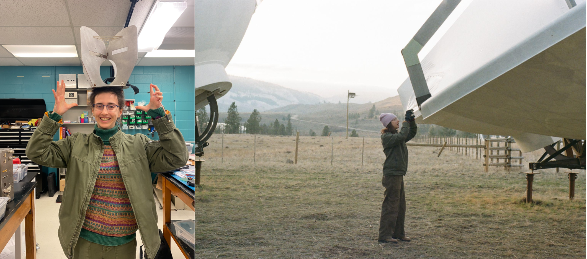
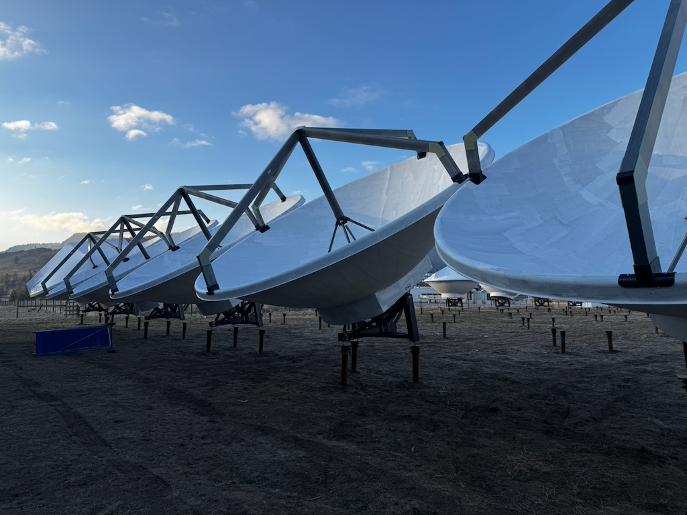

I began my PhD work in the McGill Physics Department and Trottier Space Institute in August 2024.
So far, I've spent a lot of time simulating how realistic systematics and foregrounds will compromise our ability to extract meaningful cosmological conclusions from post-reionization HI intensity maps prepared using the under-construction Canadian Hydrogen Observatory and Radio-transient Detector (CHORD).
These days, I'm also spending a bit of time investigating whether it'll be worthwhile to instrument one of the 512 CHORD dishes with an elevation drive motor. The idea here is that we could cross-link point source transits to obtain a beam measurement robust against gain variations.
Looking ahead, I'm eager to branch out into star-formation line intensity mapping and the epoch of reionization.
Here's a picture of proto-CHORD from a Jan-Feb 2026 fieldwork trip I took to the Dominion Radio Astrophysical Observatory (near Kaleden, BC) to build feeds and conduct dish metrology:

For a more comprehensive overview of what I've been up to scientifically, feel free to consult my CV:
Beyond research, I enjoy volunteering at local astronomy outreach events such as AstroFest and Astronomie en Fût / Astronomy on Tap.
Outside science, you can often find me going on assorted outdoor quests, absorbing the Montréal world music scene, improvising exercises in improbable culinary fusion, learning about (especially far Northeastern Eurasian) languages, reading what could maybe be described as post–magical realism, playing a subset of linguistic and geographical puzzle games with my friends, taking poetic inspiration from 1970s-90s Argentine rock, and crocheting for the sake of topology and geometry.
Here are some pictures I've taken in Montréal: